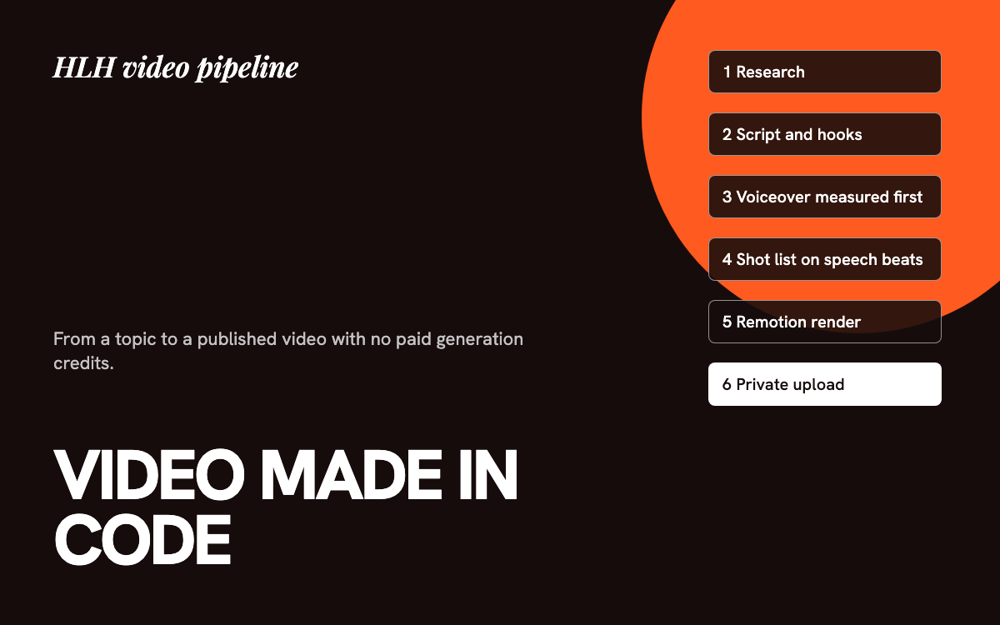

A video pipeline made in code, with no generation credits.
A multi-agent pipeline that takes a topic to a finished, SEO-packaged YouTube video using motion graphics rendered in Remotion.

The problem
I run a faceless health channel and did not want to hand-build every video, or pay per clip for AI footage. The goal was a repeatable process that costs nothing to render and keeps a consistent look.
The pipeline
- Research and script. Agents research the topic and shape a script into beats.
- Hooks. A separate agent writes the opening and closing lines, so the first seconds get dedicated attention.
- Voiceover first. The narration is generated and its real timing measured before the shot list exists, so cuts land on actual speech.
- Shot list and render. A fixed structure of a five-shot hook, content beats, a retention moment, and an outro, rendered as procedural motion graphics in Remotion.
- Package and upload. A thumbnail from Canva, a written SEO package, and a script that uploads through the YouTube API.
Decisions that mattered
- Dropped paid AI footage. When credits ran out I replaced the generation step with Remotion scenes. Cost went to zero and the look became consistent.
- One shared engine. Theme and scene components live in one place, so restyling every video is one edit.
- Logo is never generated. Image models garble text, so the brand mark is placed as a real image.
- Uploads default to private. The script never publishes publicly. I review and flip visibility myself.
- Honest disclosure. I answer YouTube's synthetic-content question based on what each video contains.
Lessons
Measuring audio before cutting changed the edit more than any visual tweak. I also found the voiceover tool needed an explicit speed flag and ffmpeg on the path, and recorded both so the next run does not fail the same way.
Outcome
The first video is published. I have not collected audience numbers worth quoting yet, so none are claimed.
The code
A sanitized copy of this project is public. Client data, keys, and personal details are removed, and sample data stands in where the real data lived.
Tools, stack, and skills
- Stack
- Node.js, Remotion (React), YouTube Data API v3, Kokoro text-to-speech
- Models
- Gemini 2.5 Flash-Lite, Claude Haiku
- Tools
- Canva (thumbnails)
- Skills
- Motion graphics, pipeline design, YouTube SEO packaging, voiceover timing